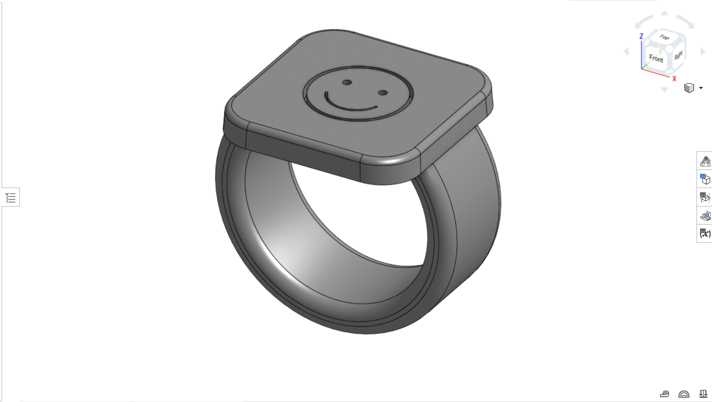

Signet Ring

The Signet Ring is a custom Onshape CAD model designed for rapid prototyping and 3D printing. The design includes a customizable top surface that can be edited to create different appearances or designs. Its color and material properties can also be adjusted within Onshape.